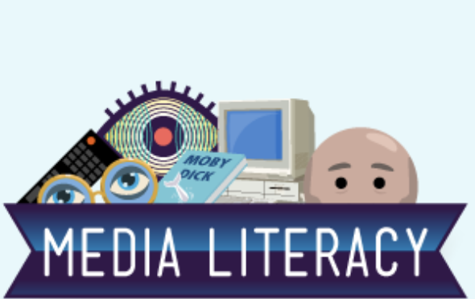
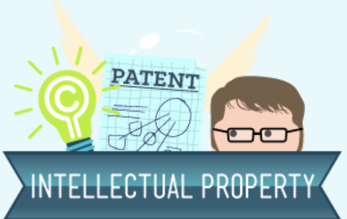
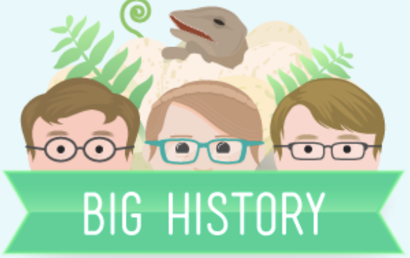
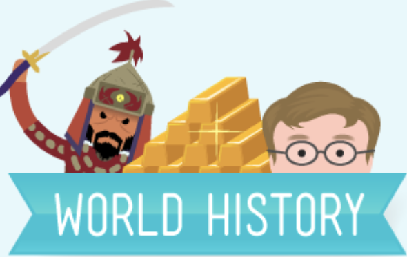
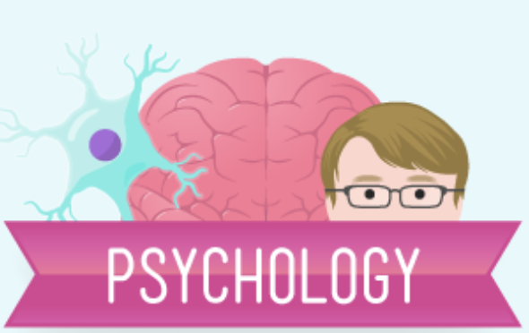
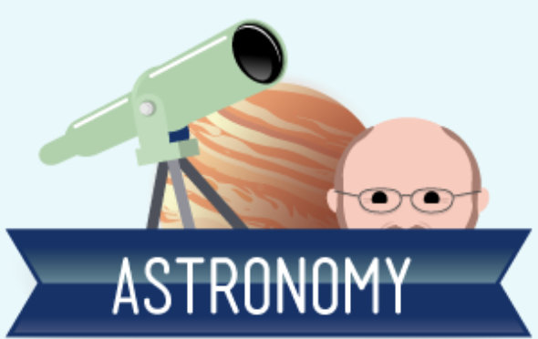
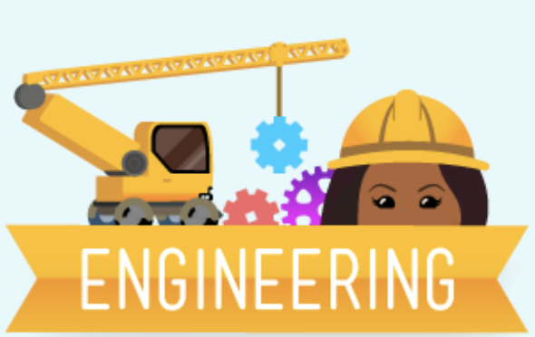
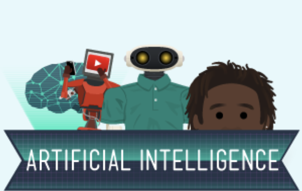
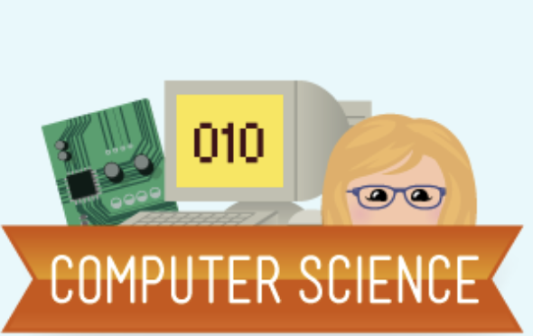

In which John Green kicks off the Crash Course Literature mini series with a reasonable set of questions. Why do we read? What's the point of reading critically. John will argue that reading is about effectively communicating with other people. Unlike a direct communication though, the writer has to communicate with a stranger, through time and space, with only "dry dead words on a page."
So how's that going to work? Find out with Crash Course Literature! Also, readers are empowered during the open letter, so that's pretty cool.
Beginning April 13th, join Craig Benzine (the internet's WheezyWaiter) for 16 weeks of Film History right here on Crash Course. He'll look at the history of one of our most powerful mediums.
Film has the ability to communicate with images, entertain, move us, frighten us, and so much more. From A Trip to the Moon to Captain America: Civil War, the history of film is really a history of humanity and Craig will do his best to lead us all through it.

Join Jay Smooth next week for the start of our next miniseries: Crash Course Media Literacy! First thing’s first: what is media literacy? In our first episode, Jay breaks this question down and explains how we’re going to use it to explore our media saturated world.
We're back! This year Mike Rugnetta is teaching you about theater and drama.
Are you in drama club? Want to know about the history of theater? Maybe learn some theater history? Have a lot of fun? This is the series for you!
Over the next year, we're going to learn about the history and workings of the dramatic arts, together. It's going to be a great time, very low drama. Except it's all drama. Embrace the paradox, folks.
In which Jacob Clifford and Adriene Hill launch a brand new Crash Course on Economics! So, what is economics? Good question. It's not necessarily about money, or stock markets, or trade. It's about people and choices. What, you may ask, does that mean. We'll show you. Let's get started!
You've probably heard the word "Entrepreneur" thrown around a lot in business. It conjures images of Elon Musk, Bill Gates, or Oprah Winfrey. But, it goes way beyond that. In this episode of Crash Course Business: Entrepreneurship, Anna helps us to figure out who Entrepreneurs are, and what that title actually means.

This week, Stan Muller launches the Crash Course Intellectual Property mini-series. So, what is intellectual property, and why are we teaching it? Well, intellectual property is about ideas and their ownership, and it's basically about the rights of creators to make money from their work. Intellectual property is so pervasive in today's world, we thought you ought to know a little bit about it. We're going to discuss the three major elements of IP: Copyright, Patents, and Trademarks.
We've joined with Evelyn From the Internets to bring you the first half of our series on Business. Sponsored by Google, this first series will have Evelyn sitting down and going through Soft Skills. She'll be talking about Trust, Resumes, Conflict Resolution, Interviewing, and much, much more. So join us starting next week for Crash Course Business - Soft Skills with your host, Evelyn From the Internets.

In which John Green, Hank Green, and Emily Graslie teach you about, well, everything. Big History is the history of everything. We're going to start with the Big Bang, take you right through all of history (recorded and otherwise), and even talk a little bit about the future. It is going to be awesome. In the awe-inspiring sense of the word awesome.

In which John Green investigates the dawn of human civilization. John looks into how people gave up hunting and gathering to become agriculturalists, and how that change has influenced the world we live in today. Also, there are some jokes about cheeseburgers.
John Green is teaching history again. This time, we're looking at the history of Europe in 50 episodes. We'll start at the tail end of the so called Middle Ages, and look at how Europe's place in the world has developed and changed in the last 700 years or so.
In which John Green kicks off Crash Course US History! Why, you may ask, are we covering US History, and not more World History, or the history of some other country, or the very specific history of your home region? Well, the reasons are many. But, like it or not, the United States has probably meddled in your country to some degree in the last 236 years or so, and that means US History is relevant all over the world.
Today Hank begins to teach you about Philosophy by discussing the historical origins of philosophy in ancient Greece, and its three main divisions: metaphysics, epistemology, and value theory. He will also introduce logic, and how you’re going to use it to understand and critically evaluate a whole host of different worldviews throughout this course. And also, hopefully, the rest of your life.

What does Psychology mean? Where does it come from? Hank gives you a 10 minute intro to one of the more tricky sciences and talks about some of the big names in the development of the field. Welcome to Crash Course Psychology!!!
Beginning Mondays in March, we are bringing you Crash Course Sociology. Host Nicole Sweeney will walk you through questions big and small about how we both shape societies and are shaped by them. We hope you'll join us.
In which Craig Benzine introduces a brand new Crash Course about U.S. Government and Politics! This course will provide you with an overview of how the government of the United States is supposed to function, and we'll get into how it actually does function. The two aren't always the same thing. We'll be learning about the branches of government, politics, elections, political parties, pizza parties, and much, much more!
And thus begins the most revolutionary biology course in history. Come and learn about covalent, ionic, and hydrogen bonds. What about electron orbitals, the octet rule, and what does it all have to do with a mad man named Gilbert Lewis? It's all contained within.
Hank does his best to convince us that chemistry is not torture, but is instead the amazing and beautiful science of stuff. Chemistry can tell us how three tiny particles - the proton, neutron and electron - come together in trillions of combinations to form ... everything.
In this, THE FIRST EPISODE of Crash Course Physics, your host Dr. Shini Somara introduces us to the ideas of motion in a straight line. She talks about displacement, acceleration, time, velocity, and the definition of acceleration. Also, how does a physicist discuss speed as opposed to a police officer? And did you deserve that ticket? You can figure it all out with the help of Physics!

Welcome to the first episode of Crash Course Astronomy. Your host for this intergalactic adventure is the Bad Astronomer himself, Phil Plait. We begin with answering a question: "What is astronomy?"
With a solid understanding of biology on the small scale under our belts, it's time for the long view - for the next twelve weeks, we'll be learning how the living things that we've studied interact with and influence each other and their environments. Life is powerful, and in order to understand how living systems work, you first have to understand how they originated, developed and diversified over the past 4.5 billion years of Earth's history. Hang on to your hats as Hank tells us the epic drama that is the history of life on Earth.

Coming next week, Dr. Shini Somara returns to Crash Course for Crash Course Engineering!

Welcome to Crash Course Artificial Intelligence! In this series host Jabril Ashe will teach you the logic behind AI by tracing its history and examining how it’s being used today. We’ll even show you how to create some of your own AI systems with the help of co-host John Green Bot! We’ll also spend several episodes on an area of AI known as machine learning which has skyrocketed in popularity in recent years. AI is everywhere right now and has the potential to do amazing things in our lives. But there’s also great potential for peril, which is why we believe it is more important than ever that developers, and non-developers alike, understand AI.

Starting February 22nd, Carrie Anne Philbin will be hosting Crash Course Computer Science! In this series, we're going to trace the origins of our modern computers, take a closer look at the ideas that gave us our current hardware and software, discuss how and why our smart devices just keep getting smarter, and even look towards the future! Computers fill a crucial role in the function of our society, and it's our hope that over the course of this series you will gain a better understanding of how far computers have taken us and how far they may carry us into the future.
In which John Green previews the new Crash Course on Navigating Digital Information! We've partnered with MediaWise, The Poynter Institute, and The Stanford History Education Group to teach a course in hands-on skills to evaluate the information you read online. The internet is full of information, a lot of it notably wrong. We're here to arm you with the skills to separate the good stuff from the inaccurate stuff, and browse the internet with confidence.